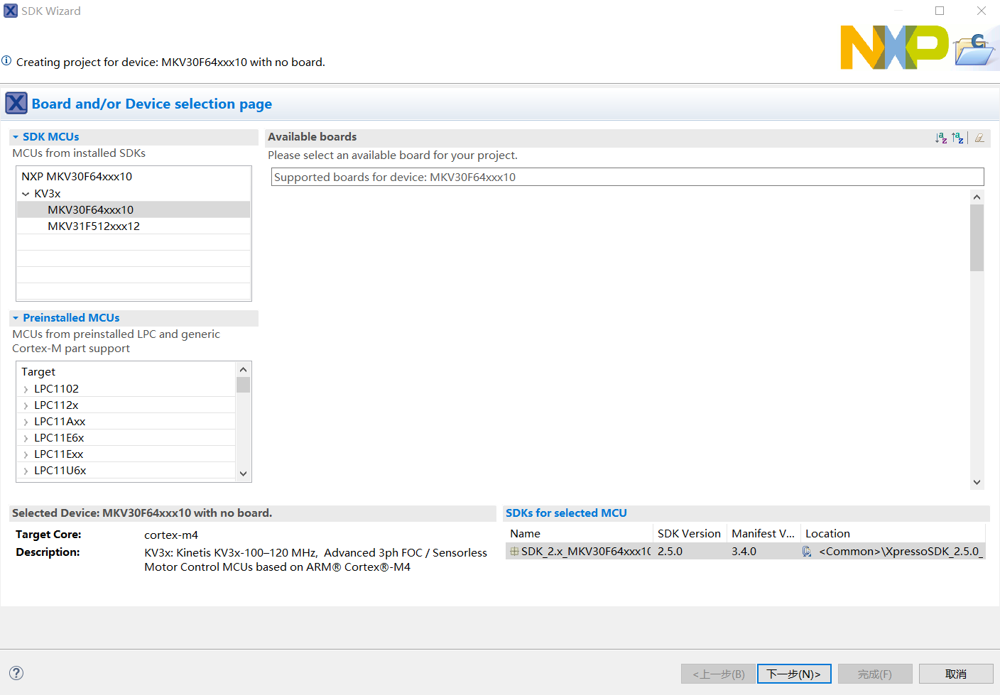
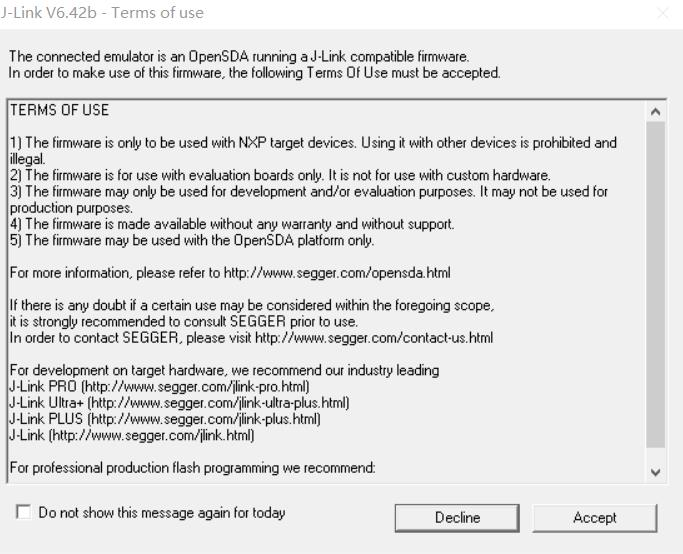

4.5.3.HelloWorld 示例
Step 1.点击视图中的 Quickstart Panel->New project...

Step 2.选择已被你载入的 SDK 包 KV3x，然后选择对应的芯片，在这里为 MKV30F64xxx10，点击下一步

Step 3.SDK 包引入文件选择，在这里不引入任何 Driver，选择 ，默认配置，点击完成
Project name prefix:生成的文件夹名的前缀
Project name suffix:生成的文件夹名的后缀
Device Packages:MKV30F64VLF10
SDK Debug Console:Semihost(允许代码在 Debug Viewer 中查看）
Step 4.查看视图的项目资源管理器，出现 SDK 项目，则新建工程完成

Step 5.把开发版接入电脑，点击视图的 Quickstart Panel，选择 Debug，右上的小图标也有对应的调试器，在这里采用 JLink Debug

Step 6.选择 J-Link 配置，点击确定

Step 7.由于开发版固件是 Jlink，所以会弹出以下窗口，点击 accept

Step 8.打开调试必要视图，点击是

Step 9.你会发现界面已经切换成 Debug 模式，上方工具栏，有以下调试图标，点击 Start

Step 10.在下方视图的控制台中看到打印出来的信息